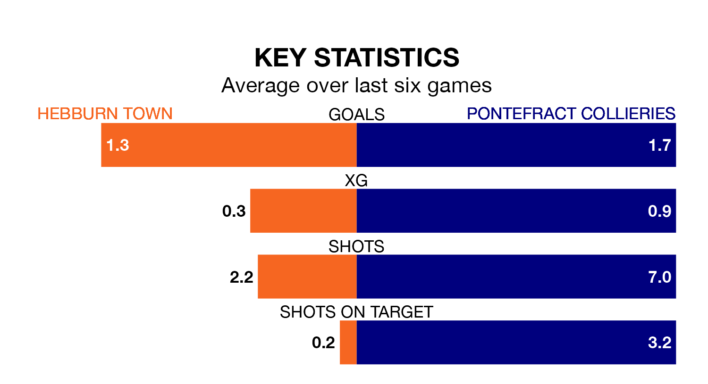

Hebburn Town host Pontefract Collieries on Saturday in the Northern Premier League Division One East.
In their last league match, on January 6, Hebburn drew with Winterton Rangers 2-2 away.
Pontefract Collieries lost, 2-0 at home against Newton Aycliffe on Tuesday.
With 37 goals in 19 games so far this season, Pontefract Collieries are the league's joint-third-highest scorers with 1.9 goals per game. And they are conceding fewer than average, letting in 24 goals at a rate of 1.3 per game.
Hebburn are also above average scorers, with 1.8 goals per game, compared to a league average of 1.6. They have conceded 1.3 goals per game.
Town are second in the table after 20 games, of which they have won 12 and drawn three, earning 39 points.
The visitors are four places behind the home side in sixth, with 10 wins and four draws putting them on 34 points.
In the last three years, Hebburn and Pontefract Collieries have played each other on five occasions. They won two each, and they drew once.
On average, Hebburn scored 1.4 goals and Pontefract Collieries 1.4 in those matches.
Their last meeting was on August 22, when Hebburn won 3-2 away.
Hebburn are in mixed form in the Northern Premier League Division One East, with three wins and a draw from their last six games.
And also with three wins and a draw over that period, Pontefract Collieries's form is identical – they have both taken 10 points from 18.
Updated: 10:50, 10/01/24